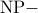
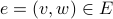

Unique Games Conjecture
Very recently, Subhash Khot won the Rolf Nevanlinna Prize, considered one of the top honours in the field of mathematics, for his contribution to computational complexity theory. The conjecture has broad applications in the theory of hardness of approximations and is unusual in the sense that unlike problem, the academic world seems evenly divided on whether this conjecture is true or not.
“Some very natural, intrinsically interesting statements about things like voting and foams just popped out of studying the UGC…. Even if the UGC turns out to be false, it has inspired a lot of interesting math research.”
—Ryan O’Donnell
This post is very basic and targeted towards anyone who has a knowledge of what complexity classes , , Hard and Complete means.
Assuming , researchers started exploring footholds for finding near optimal solutions efficiently. However, as it turns out, for some Complete optimization, it is not possible to approximate beyond a particular factor. Perhaps an example will highlight point.
Approximation Algorithms
Any optimization, , is either a minimization or a maximization problem. For a minimization problem, for each instance of , there exists a non-empty feasible set of solutions each of which is assigned an objective value. Our goal is to come up with the one whose objective value is lowest. Let's us call such a solution as optimal solution and let's denote it value by . We wish to come up with a solution which is as close (but greater since is a minimization problem) to as possible. Suppose, an approximation algorithm  outputs a solution which at most times (). We say that is a factor approximation algorithm. Similar results hold for maximization problems as well.
We will now prove the hardnes for TSP.
outputs a solution which at most times (). We say that is a factor approximation algorithm. Similar results hold for maximization problems as well.
We will now prove the hardnes for TSP.
Example: Travelling Salesman Problem (TSP)
We will show that it is hard to approximate TSP for any approximation factor. To prove this, we will transform Hamiltonian Cycle Problem to TSP.
TSP: Given a weighted undirected graph, find the minimum weight tour that visits each vertex exactly once.
Hamiltonian Cycle Problem: Given a Graph , does there exist a simple cycle that visits all the vertices of exactly once?
Given an instance of Hamiltonian Cycle Problem, construct an instance of TSP as follows:
.
is a complete graph.
For all edges , .
For other edges, where .
If has a hamiltonian cycle,  . Otherwise, the tour must include an edge of weight . Hence, .
. Otherwise, the tour must include an edge of weight . Hence, .
If there is a factor approximation factor for TSP, we can reduce Hamiltonian Cycle Problem to TSP and check the decidability of Hamiltonian Cycle Problem. If has a hamiltonian cycle, . Hence, the algorithm outputs a tour of weight at most . Otherwise, which implies the tour the algorithm outputs has weight greater than . This creates a gap between the YES/NO instances of Hamiltonian Cycle Problem and it's decidability can be checked efficiently, which is not possible. Hence, it's hard to approximate TSP to a factor of , for any .
Reduction
Let be a minimization problem. A gap-introducing reduction maps an instance  of SAT to a instance of such that
of SAT to a instance of such that
If
is satisfiable, then , andIf
is not satisfiable, then  .
.
Obviously, . Such a kind of gap-introducing reduction immediately implies an inapproximability of for .
One problem with the above approach is blowing an “additive” gap to a “multiplicative” gap.
PCP Theorem
Probabilistic characterization of class yields a general technique for gap-introducing reduction. Informally speaking, a probabilistically checkable proof for an language is a proof whose validity can be checked probabilistically by examining its very few bits. A probabilistically checkable proof system comes with two parameters: (a)  the number of random bits required by the verifier, and (b) the number of bits of the proof the verifier is allowed to examine.
the number of random bits required by the verifier, and (b) the number of bits of the proof the verifier is allowed to examine.
A language if there's a verifier that on input , obtains a random string of length and queries bits of the proof such that ( & are constants):
If , then there's a proof which verifier accepts with probability , and
If , then every proof is accepted with probability .
The PCP Theorem gives another characterization of the class .
PCP Theorem:
One direction of the proof, is easy (try proving it as a small exercise). Other direction has been a result of years of research by various CS Theorists. For an excellent exposition to the history of PCP Theorem, refer here. Fortunately, the theorem, modulo its proof, is sufficient to derive hardness results.
Hardness of MAX-3SAT
In this example, we will try proving the hardness for . The reduction is from . Specifically, there exists a constant such that a formula can be converted to a formula such that
If
is satisfiable, then , andIf
is not satisfiable, then .
The PCP for consists of a truth assignment to its boolean variables. The essential idea of the reduction is to encode the probabilistically checkable proof as a instance. The verifier uses  random bits and queries bits of the proof. In all, there can be different possible random strings generated and hence a total of locations of the proof can be queried by the verifier. will have a variable corresponding to each of these locations.
random bits and queries bits of the proof. In all, there can be different possible random strings generated and hence a total of locations of the proof can be queried by the verifier. will have a variable corresponding to each of these locations.
A random string  picked by the verifier gives us a value either True or False based on the values of the variables in those locations. This truth value can be represented as a function . Hence, we can define a boolean formula as follows: for all such that
picked by the verifier gives us a value either True or False based on the values of the variables in those locations. This truth value can be represented as a function . Hence, we can define a boolean formula as follows: for all such that  , add a clause where are the corresponding variables and if and otherwise. Then can at most be clauses in . Also, the length of each clause is . Ensure that the length of each clause is by adding
, add a clause where are the corresponding variables and if and otherwise. Then can at most be clauses in . Also, the length of each clause is . Ensure that the length of each clause is by adding  new variables to each clause. The maximum number of clauses now is .
new variables to each clause. The maximum number of clauses now is .
. has at most clauses. If is satisfiable, all the clauses of is true. However, if is not satisfiable, at least half the random string rejects the proof i.e. at least half of are not satisfiable. Hence, number of unsatisfiable clauses in must be at least . Hence, .
PCP Theorem was a landmark result in the field of computational complexity and after its inception, the focus moved on to produce optimal results i.e. to prove approximability and inaproximability results for a problem that match each other. The most influential development consisted of (a.k.a. ), Raz's Parallel Repetition Theorem, introduction of Long Code, its application in analyzing PCPs, and Hastad's use of Fourier Series to analyze Long Code. I will briefly mention about these results.
Label Cover Problem (a.k.a. 2-Prover-1-Round Game)
A is a CSP. It consists of a bipartite graph where vertices represent variables and edges represent constraints. Goal is to find a labelling such that for all edges , the following “projection” constraint is satisfied: . Let denote its optimal value.
I will now give the game formulation of Given an instance , consider a probabilistic verifier which picks an edge  at random and sends to Prover and to Prover . The provers respond back with labels from set and respectively. The Verifier accepts only if where  and are the labels returned. The provers’ strategy is to maximize the probability of acceptance. The probability, called the value of the game, will obviously be same as . This establishes the analogue between Constraint Satisfaction View and the ProverRound view.
and are the labels returned. The provers’ strategy is to maximize the probability of acceptance. The probability, called the value of the game, will obviously be same as . This establishes the analogue between Constraint Satisfaction View and the ProverRound view.
We are interested in the case when the label sets and have constant sizes. The PCP Theorem implies that the gap version of is Hard and this gap can be amplified using Raz's Parallel Repetition Theorem.
PCP Theorem + Raz's Parallel Repetition Theorem
For every  , is Hard for instances with label cover of size . Specifically, there exists a constance such that for every , , , it is Hard to distinguish between:
, is Hard for instances with label cover of size . Specifically, there exists a constance such that for every , , , it is Hard to distinguish between:
 case: .
case: .case: .
Many inapproximability results are obtained by reduction from .
The inapproximability results derived from often use gadgets constructed from Boolean hypercube. These reductions can be viewed as PCPs and the gadgets test, probabilistically, whether a given codeword is a Long Code or not. A useful Long Code-ing scheme is the so called dictatorship function on a boolean hypercube - it's a function that depends only on one coordinate i.e. for some fixed . The truth table for this function can be thought of as an encoding scheme for . We need that a dictatorship function passes this test with probability whereas a function that is far from bring a dictatorship function passes this test with probability at most . This gap essentially translates to a instance of .
The PCP replaces every vertex of with a boolean hypercube: for , every is replaced by a dimensional hypercube and every is replaced by a dimensional hypercube. The PCP consists of truth table of boolean functions on these hypercubes. PCP testing consits of two parts:
Codeword Testing: Each boolean function is close to a dictatorship function, and
Consistency Testing: For an edge , , where
and are the labels which the dictatorship function on boolean hypercubes for vertex and (respectively) correspond to.
Unique Games Conjecture
The PCP strategy described above succeeds for some problems (, , ), it doesn't yield any useful results for problems such as , , , and . For the first set of problems, PCPs are allowed to make three or more queries but for the second set of problems, at most two queries are allowed, which makes the PCP very weak.
It was pointed out that another barrier is the “many-to-one”-ness of the projection constraints in , i.e., when . This poses a problem in the consistency testing part where a query PCP is too weak to ensure consistency between two hypercubes of vastly varying dimensions. This motivated the study of where and is a bijection.
Unique Game
A is a constraint satisfaction problem: given a directed graph where vertices represent variables and edges represent constraint, the objective is to assign a label to each vertex from the set such that maximum number of edges are satisfied. The constraint on each edge is a bijection . An edge is satisfied by a labelling if .
As opposed to , the graph here need not be bipartite. This distinction is minor as can be seen by the following game formulaion of : given an instance of problem, the verifier picks an edge at random and sends to prover and to prover . & returns a label in and the verifier acceptes only if where & are the answers of two provers.
Note that if , then such a labelling can be found in polynomial time: fixing the label of a vertex automatically fixes the label of every vertex which is its neighbour and so on. From the viewpoint of , the interesting case is when where .
Unique Game Conjecture
Unique Games Conjecture: is Hard
For every , there exists a , such that given a instance , it is Hard to distinguish between the two cases:
- case: .
case: .
Note that the conjecture is false if . Also, a random assignment satisfies fraction of edges and hence .